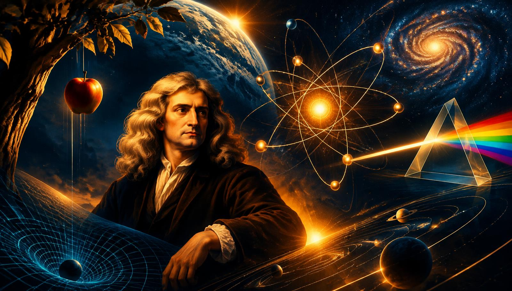
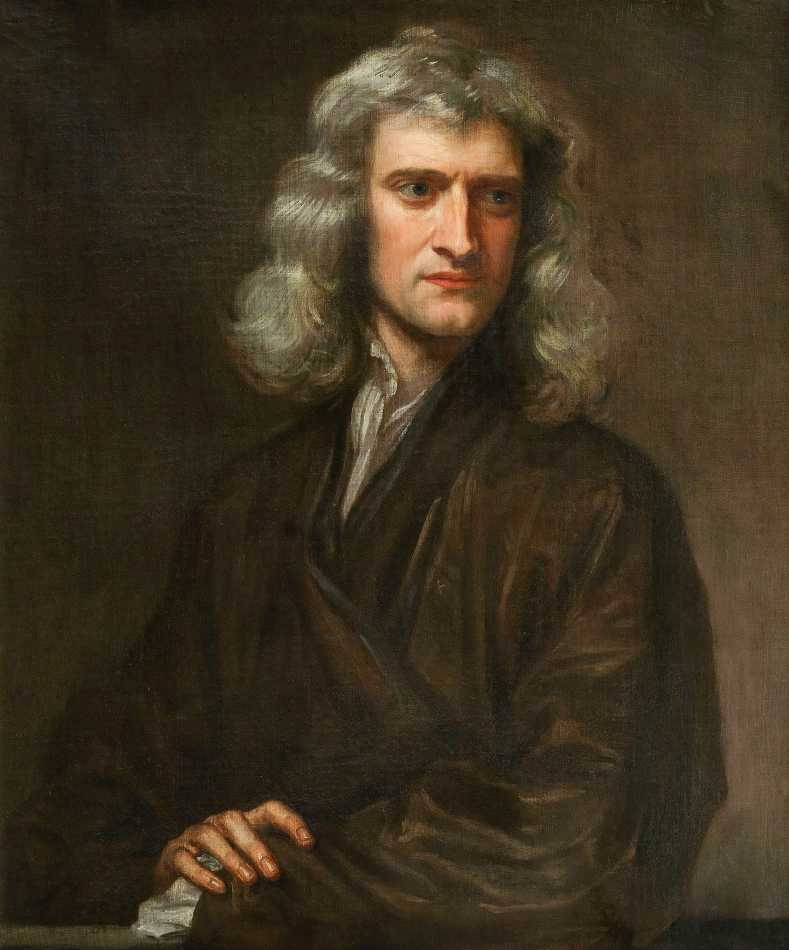
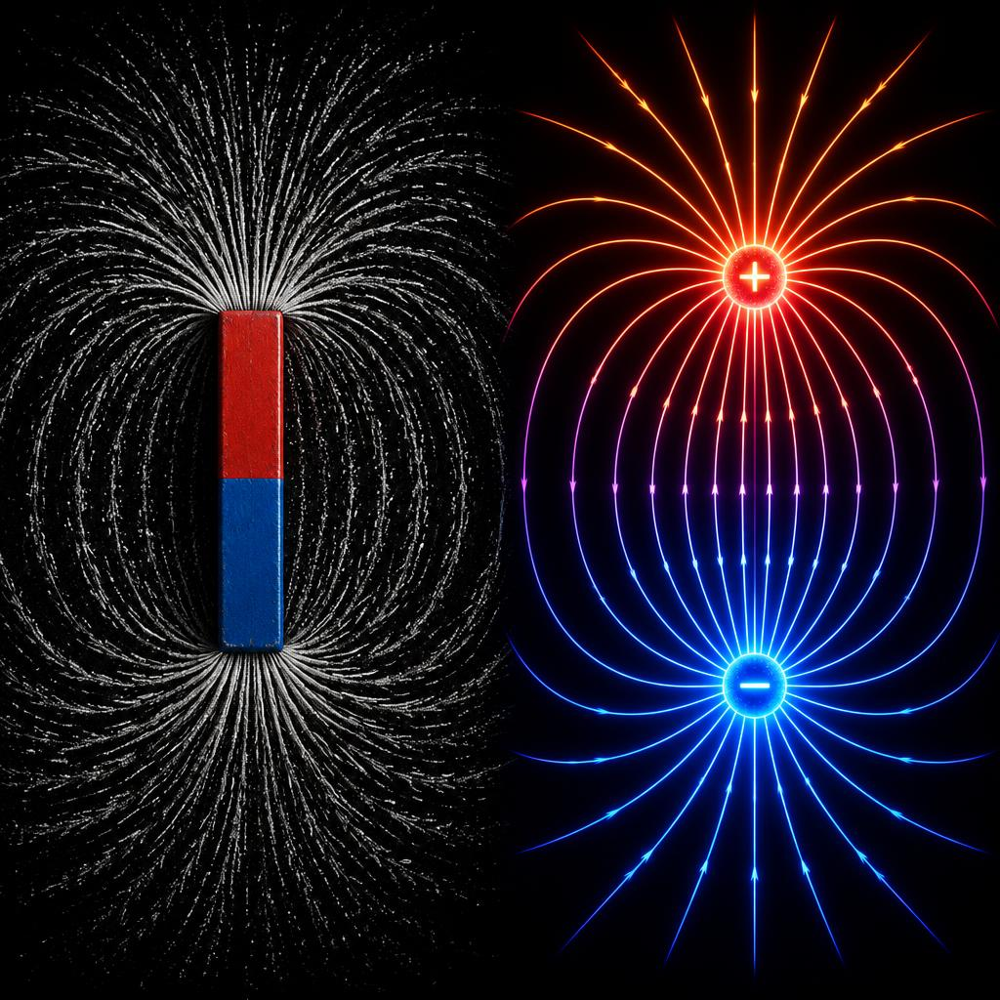
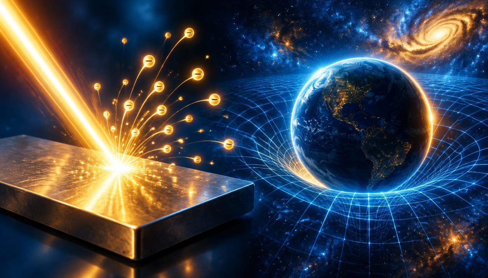
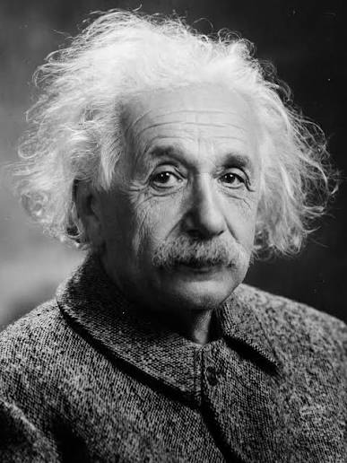
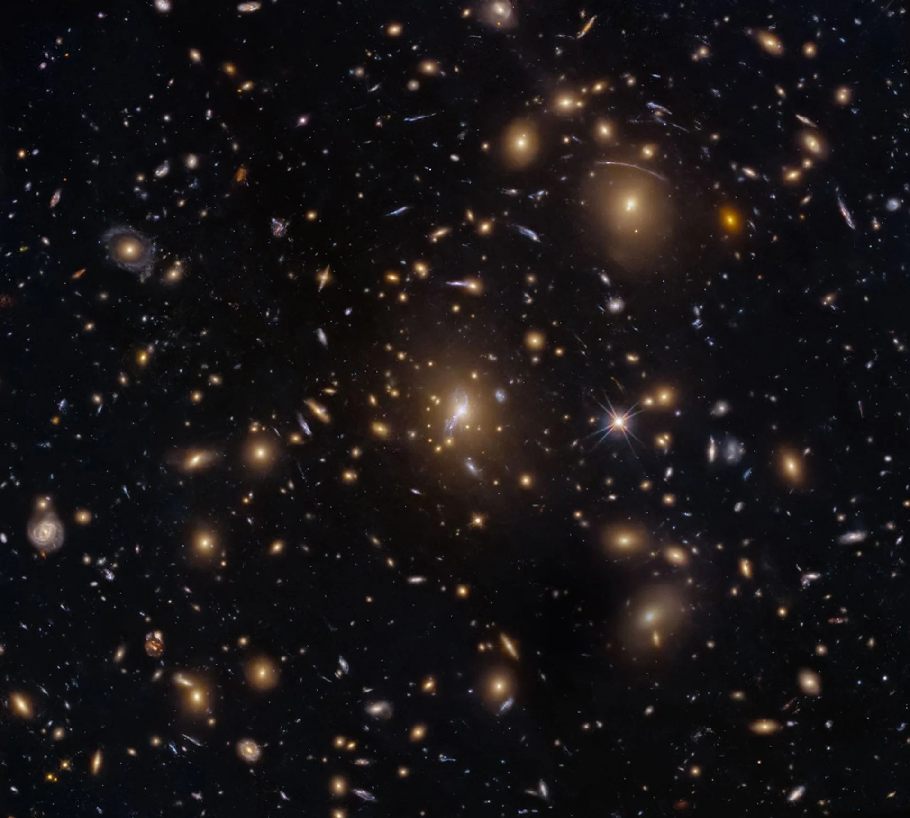

Das leis de Newton à luz que arranca elétrons, uma edição especial com tudo o que você precisa saber sobre física.
A palavra vem do grego physis, que significa “natureza”. Física é a ciência que estuda a matéria, a energia, o espaço e o tempo, e como eles interagem. Ela observa os fenômenos naturais, como uma pedra caindo, um raio cortando o céu ou uma estrela brilhando, e procura descrevê-los com leis e equações matemáticas.
O objetivo principal da física é entender como o universo funciona: descobrir as leis fundamentais que regem a natureza, explicar os fenômenos que observamos e prever o que vai acontecer. Esse conhecimento vira tecnologia: eletricidade, celulares, GPS, aviões, exames de raio-X e energia solar.

Como o universo é imenso, a física se divide em ramos. Cada um olha para um tipo de fenômeno.
Movimento e forças: cinemática, dinâmica e estática. Ex.: carros, foguetes, alavancas.
Calor, temperatura, dilatação e termodinâmica. Ex.: motores e geladeiras.
Ondas sonoras, sísmicas e acústica. Ex.: música e sonar.
Comportamento da luz: reflexão, refração, lentes, espelhos e cores.
Cargas elétricas, correntes, ímãs e campos. Ex.: motores elétricos e rádio.
O mundo dos átomos e das partículas subatômicas.
Espaço, tempo e gravidade em altas velocidades e grandes massas.
O núcleo atômico, a radioatividade, a fissão e a fusão.
Também existem a astrofísica, a física de partículas, a física do estado sólido e a biofísica, entre outras.
A virada aconteceu por volta de 1900, quando experiências que as leis antigas não conseguiam explicar obrigaram os cientistas a repensar tudo.
Vai de Galileu e Newton (séc. XVII) até o fim do séc. XIX.
Começa no início do séc. XX com Planck e Einstein.
A física moderna não descarta a clássica. As leis de Newton continuam ótimas para construir pontes ou lançar uma bola. Elas são um caso particular, válido em baixas velocidades e escalas grandes.
Publicadas em 1687 no livro Principia, elas explicam por que as coisas se movem ou ficam paradas.
Um corpo em repouso continua em repouso, e um corpo em movimento continua em movimento retilíneo uniforme, a menos que uma força resultante atue sobre ele.
Ex.: quando o ônibus freia, seu corpo é “jogado” para frente.
A força resultante é igual à massa vezes a aceleração.
Ex.: é mais difícil empurrar um carro do que uma bicicleta.
Toda ação provoca uma reação de mesma intensidade, mesma direção e sentido oposto, que atua em corpos diferentes.
Ex.: o foguete empurra os gases para baixo e os gases empurram o foguete para cima.
Velocidade média é a distância total percorrida dividida pelo tempo gasto para percorrê-la.
No Sistema Internacional a unidade é m/s. Para converter para km/h, multiplique por 3,6.
| # | Desbravador | Tempo | vm (m/s) | vm (km/h) |
|---|---|---|---|---|
| 1º | Ana | 15,0 s | 6,67 | 24,0 |
| 2º | Lucas | 16,0 s | 6,25 | 22,5 |
| 3º | Pedro | 18,5 s | 5,41 | 19,5 |
| 4º | Júlia | 20,0 s | 5,00 | 18,0 |
| 5º | Davi | 25,0 s | 4,00 | 14,4 |
Cálculo da Ana: 100 m ÷ 15 s = 6,67 m/s → 6,67 × 3,6 = 24 km/h. Quanto menor o tempo no mesmo percurso, maior a velocidade média.
Por quase 2.000 anos se acreditou, seguindo Aristóteles, que corpos mais pesados caíam mais rápido. Galileu Galilei (1564–1642) mostrou que, desprezando a resistência do ar, todos os corpos caem com a mesma aceleração, cerca de 9,8 m/s², não importa a massa.
As duas garrafas tocam o chão praticamente juntas, em cerca de 0,64 s (t = √(2h/g) = √(2·2/9,8)). A massa diferente não muda o tempo de queda, porque a gravidade acelera igualmente os dois corpos. A resistência do ar é praticamente igual para garrafas do mesmo formato.
Assim como a gravidade age igualmente sobre a garrafa cheia e a meio cheia, Deus não faz acepção de pessoas. O amor e a graça d’Ele alcançam a todos da mesma forma, sejam “grandes” ou “pequenos”, ricos ou pobres. Também todos estamos sujeitos ao pecado e todos precisamos da salvação.
“Reconheço por verdade que Deus não faz acepção de pessoas.” (Atos 10:34)
Uma alavanca é uma barra rígida que gira em torno de um ponto de apoio, o fulcro. O martelo de unha é uma alavanca interfixa: o fulcro fica entre a força que você aplica (no cabo) e a resistência (o prego).
A vantagem mecânica é a razão entre o braço de potência e o braço de resistência (VM = bp / br). Quanto mais longo o braço onde você aplica a força, menos força é necessária.
Prego 1, só com o martelo: a cabeça do martelo apoia direto na madeira. O fulcro fica muito perto e o prego logo se inclina. É preciso muita força e o prego quase não sai.
Prego 2, martelo + bloco: com um bloco de madeira sob a cabeça do martelo, perto do prego, o fulcro sobe e o braço de alavanca fica mais favorável. O prego sai com muito menos esforço e mais reto.
Registro: anote como foi o esforço (grande, médio, pequeno) em cada caso e em diferentes posições do bloco. Quanto mais perto do prego estiver o fulcro, maior a vantagem mecânica.
Sozinhos, nossos “pregos”, como vícios, pecados e problemas, parecem impossíveis de arrancar. Mas quando temos um ponto de apoio firme, Jesus, o mesmo esforço produz um resultado muito maior. Cristo é o nosso fulcro: com Ele, o impossível se torna possível. Arquimedes disse: “Dê-me um ponto de apoio e moverei o mundo”. Nós temos esse ponto de apoio.
“Tudo posso naquele que me fortalece.” (Filipenses 4:13)
Temperatura é a grandeza que mede o grau de agitação das partículas (átomos e moléculas) de um corpo. Quanto mais rápido elas vibram e se movem, maior a temperatura. É medida em graus Celsius (°C), Fahrenheit (°F) ou kelvin (K).
Relação com a energia térmica: a energia térmica é a soma da energia cinética de todas as partículas de um objeto. A temperatura indica a energia cinética média dessas partículas. Quando um objeto recebe energia térmica, suas partículas se agitam mais e a temperatura sobe. O calor é a energia térmica em trânsito, que passa sempre do corpo mais quente para o mais frio.
Dilatação térmica é o aumento das dimensões (comprimento, área ou volume) de um corpo quando a temperatura sobe. As partículas, mais agitadas, se afastam umas das outras. No resfriamento ocorre a contração.
Exemplos práticos: trilhos de trem têm pequenos espaços entre si (juntas de dilatação) porque se alongam no calor. O mesmo acontece em pontes, calçadas e viadutos. O mercúrio ou álcool de um termômetro sobe porque dilata. Uma tampa metálica de vidro emperrada se solta quando colocada em água quente, porque o metal dilata mais que o vidro.

Campo elétrico é produzido por cargas elétricas, estejam elas paradas ou em movimento, e exerce força sobre outras cargas. Suas linhas saem das cargas positivas e chegam às negativas.
Campo magnético é produzido por cargas em movimento (corrente elétrica) ou por ímãs, e atua sobre cargas que se movem e sobre materiais magnéticos. Suas linhas são fechadas: saem do polo norte e entram no polo sul.
A diferença principal: o campo elétrico nasce de cargas, mesmo paradas, enquanto o campo magnético exige movimento de cargas. Os dois estão ligados: um campo magnético variável gera campo elétrico e vice-versa. Juntos formam as ondas eletromagnéticas, como a luz.
Se opõe à passagem da corrente e transforma energia elétrica em calor (efeito Joule). Limita e controla a corrente. Não armazena energia. Lei de Ohm: U = R·i. Unidade: ohm (Ω).
Armazena energia num campo elétrico, acumulando cargas em duas placas separadas por um isolante, e a libera depois. Usado em flashes e filtros. Unidade: farad (F).

Albert Einstein (1879–1955) propôs duas teorias que mudaram nossa visão do universo.
Relatividade Restrita (1905): as leis da física são as mesmas para todos os observadores em movimento uniforme, e a velocidade da luz no vácuo (≈ 300.000 km/s) é constante para todos. Consequências: o tempo passa mais devagar para quem se move muito rápido (dilatação do tempo), os comprimentos se contraem e massa e energia são equivalentes:
Relatividade Geral (1915): a gravidade não é uma força “à distância”, mas a curvatura do espaço-tempo causada pela massa e pela energia. Ela explica a órbita de Mercúrio, a curvatura da luz perto do Sol, os buracos negros e as ondas gravitacionais.
Contribuição: foi um dos pilares da física moderna. Substituiu o espaço e o tempo absolutos de Newton e é base da cosmologia, da energia nuclear e do GPS, que precisa de correções relativísticas para funcionar.

É a emissão de elétrons por um material, geralmente metálico, quando ele é iluminado por luz de frequência suficientemente alta. Luz fraca de alta frequência (ultravioleta) arranca elétrons. Luz intensa de baixa frequência (vermelha) não arranca.
Em 1905 Einstein explicou: a luz é formada por “pacotes” de energia, os fótons, com energia E = h·f. Um único fóton precisa ter energia suficiente para liberar o elétron.
Importância: provou que a luz também se comporta como partícula (dualidade onda-partícula), ajudou a fundar a mecânica quântica e deu a Einstein o Prêmio Nobel de 1921, não a relatividade! Hoje é a base de painéis solares, sensores de câmeras, portas automáticas e fotômetros.
Grandes físicos como Newton, Kepler, Faraday e Maxwell viam nas leis da natureza a assinatura de um Criador inteligente. Estudar física é, para o desbravador, uma forma de admirar a sabedoria de Deus no livro da natureza.
